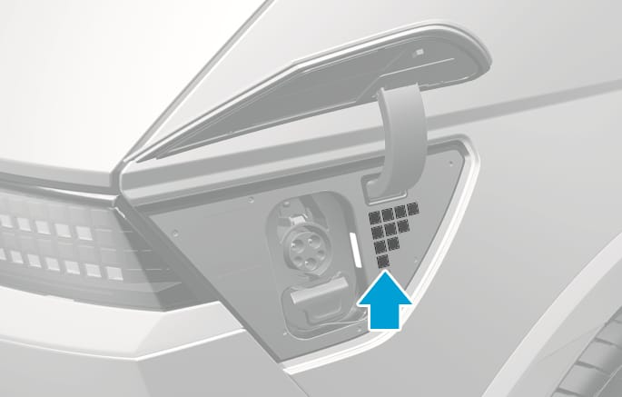
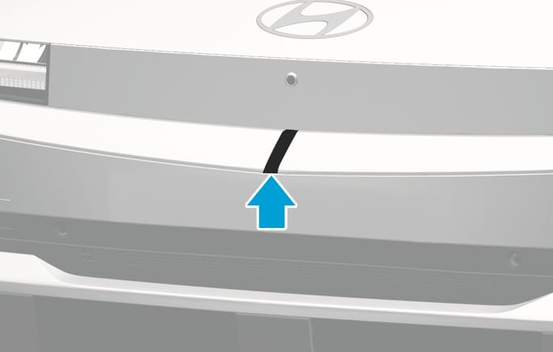
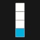
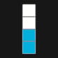
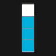
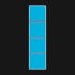
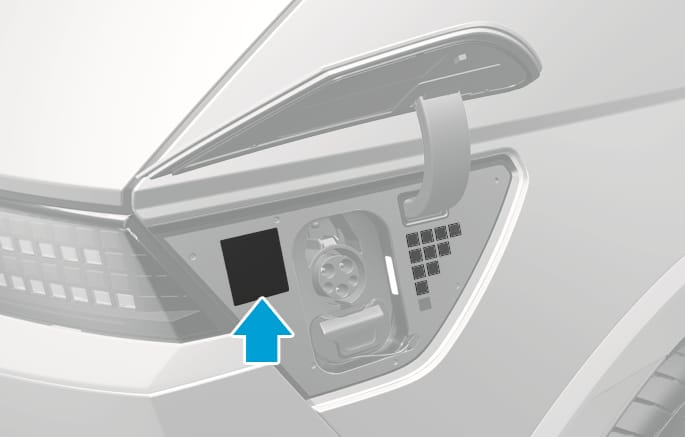
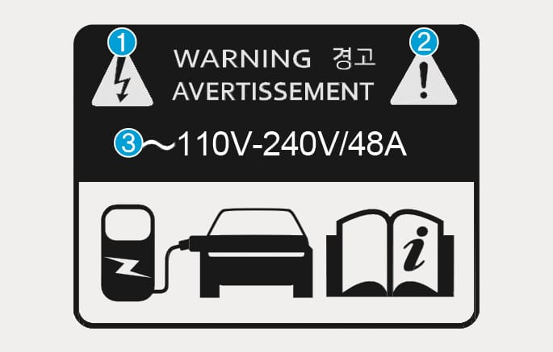
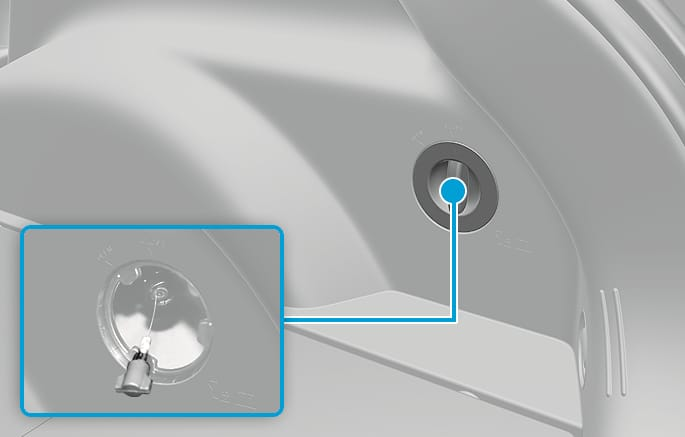

전기차 충전 정보 확인하기
차량을 충전하기 전에 반드시 알아야 하는 정보를 확인하고 숙지하십시오.
전기차의 충전 방식은 다음과 같습니다.
-
완속 충전: 공공 충전소의 완속 충전기를 이용해 충전하십시오. 완속 충전 케이블(별매품)이 필요할 수 있습니다.
-
급속 충전: 공공 충전소의 급속 충전기를 이용해 충전하십시오. 급속 충전기의 사용 방법은 각 급속 충전기 설치 회사에서 제공하는 별도 사용설명서를 참고하십시오.
-
휴대용 충전: 배터리 충전량이 적어 공공 충전소까지 이동하기 어려운 경우, 220 V 휴대용 충전기(별매품)를 이용해 가정용 전기로 차량을 충전할 수 있습니다.
-
급속 충전을 지속적으로 반복하면 배터리 성능과 수명이 감소할 수 있습니다. 반드시 필요한 경우가 아니라면 완속 충전을 사용하십시오.
-
휴대용 충전기로 차량을 충전하기 전에 가정용 전력의 충전 전압, 전류 및 부하를 확인하십시오. 전압, 전류, 또는 부하 조건이 충족되지 않는 경우 차량을 충전할 수 없거나 충전 중 화재 등 안전 사고가 발생할 수 있습니다.
-
가정에서 휴대용 충전기로 차량을 충전하는 중 배전기의 용량이 초과되면 가정에 공급되는 전원이 차단되거나 화재가 발생할 수 있습니다.
-
휴대용 충전기를 이용해 가정용 전기로 전기차를 충전하는 경우 가정용 전기 요금이 부과됩니다.
충전 방식에 따른 소요 시간은 다음과 같습니다.
|
충전 방식 |
충전 시간 |
||
|
기본형 |
항속형 |
||
|
완속 충전 |
상온에서 6시간 5분 소요 (100 %까지 충전 가능) |
상온에서 7시간 55분 소요 (100 %까지 충전 가능) |
|
|
급속 충전 |
350 kW급 충전기 |
상온에서 18분 소요 (80 % 기준, 100 %까지 충전 가능) |
상온에서 18분 소요 (80 % 기준, 100 %까지 충전 가능) |
|
50 kW급 충전기 |
상온에서 약 63분 소요 (80 % 기준, 100 %까지 충전 가능) |
상온에서 69분 소요 (80 % 기준, 100 %까지 충전 가능) |
|
|
휴대용 충전 |
상온에서 약 27시간 20분 이내로 소요 (100 %까지 충전 가능) |
상온에서 약 36시간 20분 이내로 소요 (100 %까지 충전 가능) |
|
-
배터리의 상태와 사용 기간, 충전기 사양, 주변 온도에 따라 배터리 충전 시간이 달라질 수 있습니다.
-
외부 충전기에 문제가 있는 경우 안전을 위해 배터리 충전이 중단될 수 있습니다. 정상적으로 작동하는 다른 충전기를 이용하십시오.
충전 도어 내부 또는 전면 범퍼 중앙에 있는 충전 상태 표시등을 통해 고전압 배터리의 충전량을 확인하십시오.
충전 도어 내부
-
차량의 도어가 잠금 해제된 상태에서 충전 도어의 열림 표시부를 눌러 충전 도어를 여십시오.
-
충전 도어 내부의 충전 표시등을 참고해 충전 상태를 확인하십시오.
-
0-100 %까지의 충전 상태가 4단계로 표시됩니다.

2C_ChargingDoorIndicator
충전 표시등
충전량
0–24 %
25–49 %
50–74 %
75–100 %
-
전면 범퍼 중앙
-
전면 범퍼 중앙의 충전 표시등을 참고해 충전 상태를 확인하십시오.
-
0-100 %까지의 충전 상태가 5단계로 표시됩니다.
-

2C_FrontBumperIndicator
|
충전 표시등 |
충전량 |
|
 |
0–24 % |
|
 |
25–49 % |
|
 |
50–74 % |
|
 |
75–100 % |
충전 도어 안쪽의 충전 정보 라벨에서 안전 주의 기호와 충전 사양을 확인하십시오.

2C_ChargingLabelLocation

2C_ChargingLabel
|
번호 |
이름 |
설명 |
|
(1) |
고압 전기 경고 표시 |
감전의 위험이 있는 장치를 표시합니다. |
|
(2) |
경고/주의 기호 |
주의해서 조작하지 않으면 인명피해, 부상 및 재산 손실이 발생할 위험이 있는 장치를 표시합니다. |
|
(3) |
정격 전압 및 최대 충전 전류 |
입력 전류의 유형(~, AC), 완속 충전 시 정격 전압 범위(V), 충전 전류(A)를 표시합니다. |
완속 충전 중 의도치 않게 충전 커넥터가 분리되는 것을 방지하려면, 인포테인먼트 시스템 홈 화면에서 Electric Vehicle >
-
상시 잠금: 충전 커넥터가 차량에 정상 연결되면 항상 자동으로 잠깁니다.
-
충전 중 잠금: 충전 커넥터가 차량에 정상 연결된 후 충전이 진행되는 동안에만 자동으로 잠깁니다.
-
사용 안 함: 충전 상태와 관계없이 충전 커넥터가 잠금 해제 상태로 유지됩니다.
급속 충전 및 전기 사용(V2L) 기능 사용 중에는 충전 커넥터 잠금 설정과 관계없이 커넥터가 자동으로 잠깁니다.
-
급속 충전이 끝나면 잠금이 자동으로 해제됩니다.
-
전기 사용 후 V2L 커넥터의 스위치를 눌러 전원을 끄고 차량 도어 잠금을 해제하면 커넥터 잠금이 해제됩니다.

2C_EmergencyChargingCable
배터리가 방전이나 전기 배선 이상 등으로 인해 잠금 해제 버튼이 작동하지 않는 경우, 화물칸을 열고 비상 해제 케이블을 가볍게 당겨 충전 인렛 잠금 장치의 잠금을 해제하십시오.
-
비상 해제 케이블을 당긴 후에도 잠금 해제 버튼이 작동하지 않는 경우 당사 직영 하이테크센터나 블루핸즈에서 차량을 점검하십시오.
-
일반적인 방법으로 충전 케이블을 분리할 수 없는 경우에만 비상 해제 케이블을 사용하십시오. 계속 사용할 경우 비상 해제 케이블 또는 충전 장비가 손상될 수 있습니다.
-
충전 케이블을 충전 포트에서 제거하려고 하면서 동시에 비상 해제 케이블을 당기지 마십시오. 충전 케이블을 제거하기 전에 비상 해제 케이블을 먼저 당기십시오. 이 지침을 따르지 않으면 감전 또는 중상을 입을 수 있습니다.
-
차량이 충전 중이거나 주황색 고전압 배선이 노출된 상태에서는 이 절차를 수행하지 마십시오. 이 지침을 따르지 않으면 감전, 중상 또는 차량 손상이 발생할 수 있습니다. 이 절차를 안전하게 수행하는 방법이 확실하지 않으면, 당사 직영 하이테크센터나 블루핸즈에 문의하십시오.
충전 커넥터를 강제로 분리하지 마십시오. 충전 커넥터 및 차량의 충전 인렛이 파손될 수 있습니다.